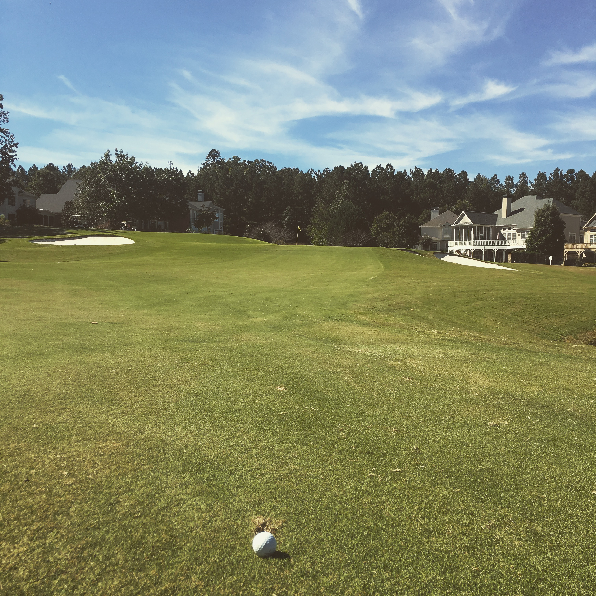

I have a number of interests, ranging from movies, to sports, to astronomy. For movies, I am usually drawn to sci-fi, comedy, action, and mystery movies. As I mentioned on my home page, I want to work for the Atlanta Falcons or Braves, which coincides with my two favorite sports: football and baseball. The odd one out is astronomy, but I have always been fascinated with space and understanding how our universe works.
In terms of hobbies, I enjoy playing golf. I began playing golf about 10 years ago, just casually. But as I started working at a golf course, I began playing more, got better clubs, and got better as a player. I'm still nowhere near good enough to play competitively, but I am still fairly decent.
